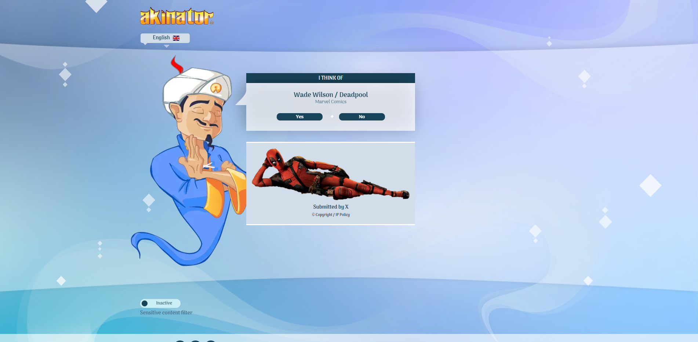
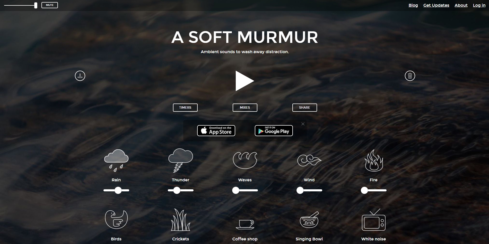
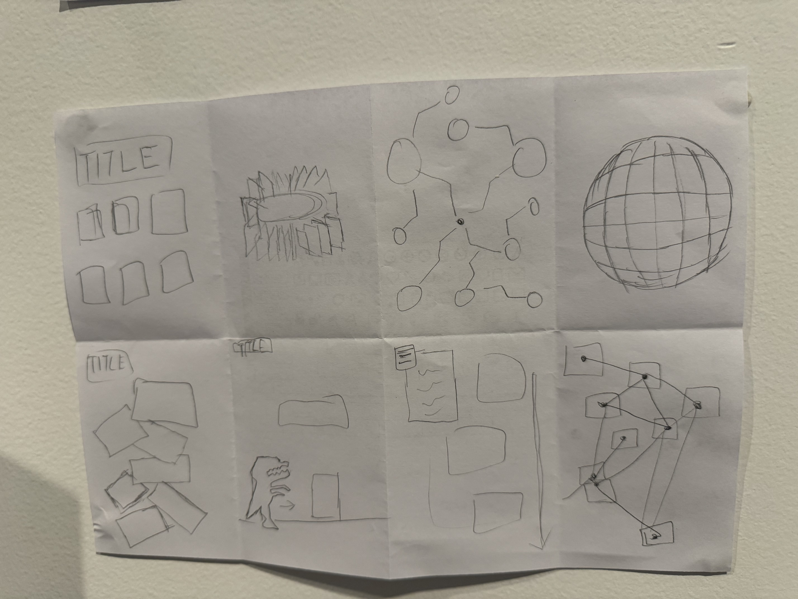
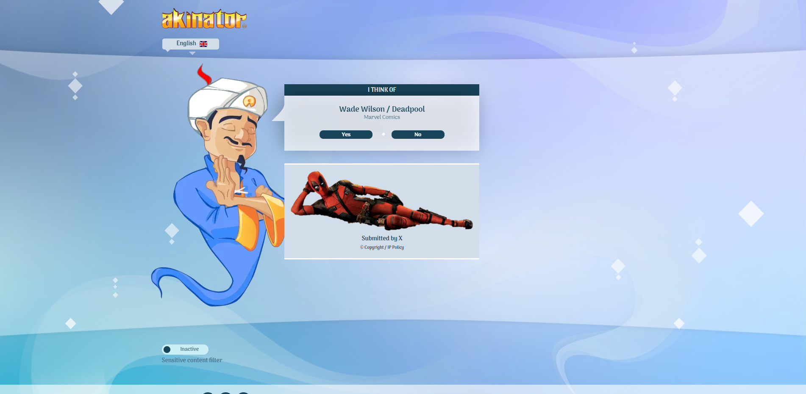
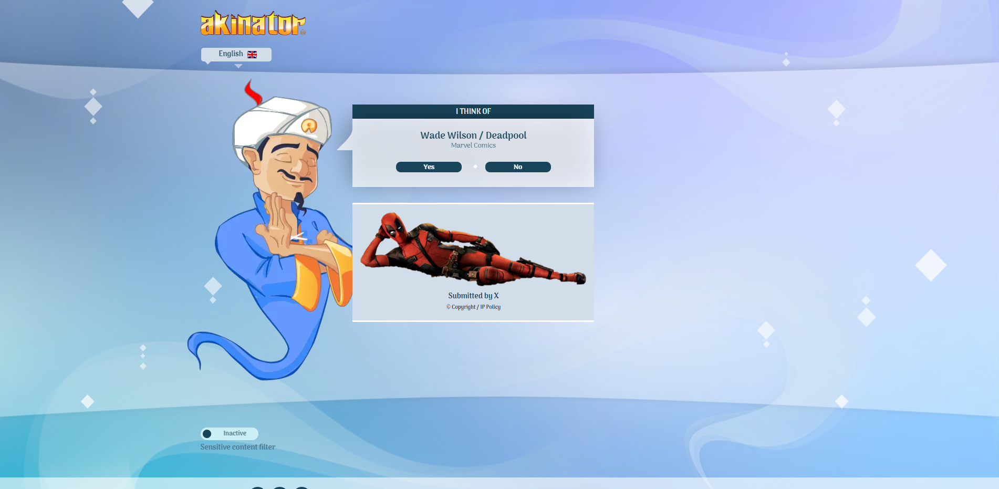

Web Design Workbook
A journey through html
Week 1
Week 2
Week 3
TOP
Week 3
Hunt n' Gather - examples of interesting / engaging / quirky / unique / or otherwise noteworthy WEB ARCHIVES or GALLERIES OF WORKS
Akinator
More Info

A Soft Murmur
More Info

Silk - Interactive Art
More Info
Crazy 8 process during tutorial
paper prototype
Placeholder button

 
